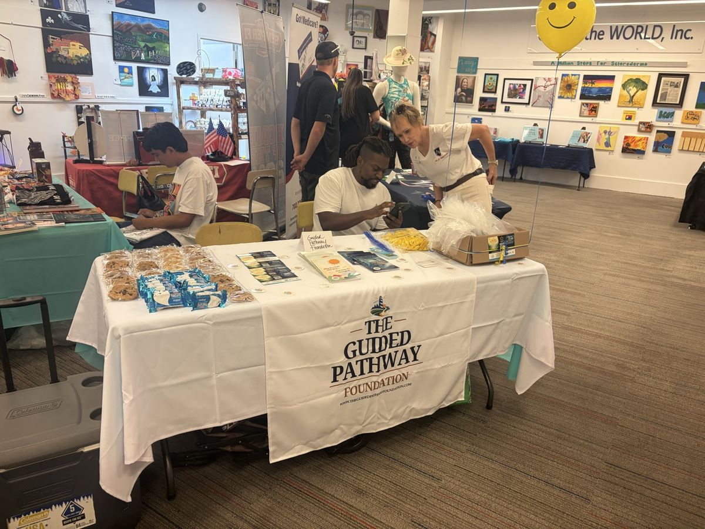
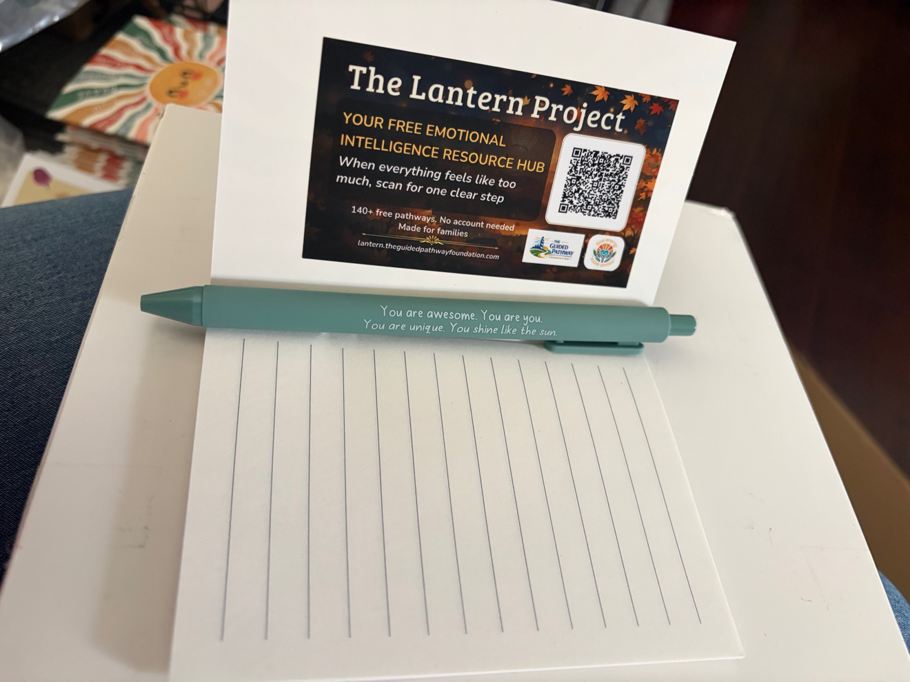
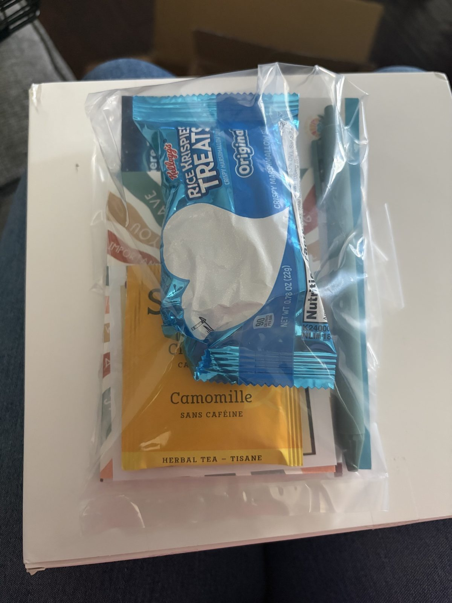
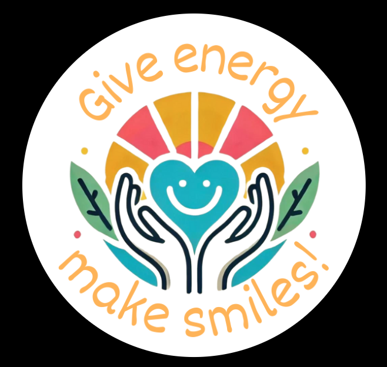

We Are Here to Help People Find Their Way.
The Guided Pathway Foundation is a nonprofit organization built on a simple but urgent belief: emotional intelligence is a survival skill and right now most people do not have it.
A Pattern That Could No Longer Be Ignored.
Across years of clinical mental wellness work serving communities in America, the same pattern emerged again and again. People were arriving not with rare or complex disorders, but with something far more fundamental: a complete lack of tools for navigating their own emotions.
They were not broken. They were lost. Living in a world moving faster than any previous generation has ever experienced, flooded with distraction, noise and pressure, with no real inner system to help them move through it.
The Guided Pathway Foundation was created in response to that reality. Our work begins before the breakdown: we give people the tools that prevent it from happening in the first place.

Energy In Motion. A Way of Moving Through Life.
The word "emotion" itself holds the answer. E-motion. Energy in motion. Every feeling a person experiences is a form of energy moving through them: real, powerful and purposeful in its potential. The question has never been whether that energy exists. The real question is who is directing it.
Emotional intelligence is the ability to recognize, understand, manage and purposefully direct your own emotions, and to understand the emotions of the people around you. It is what allows a person to pause before reacting and to feel the weight of a difficult moment without being crushed by it.
Research is clear. People with higher emotional intelligence experience better mental health outcomes, stronger relationships, greater professional success and higher overall life satisfaction. It changes how people lead, how they recover, how they communicate and how they show up for the people they love. And yet it is almost never taught.
Emotions are not the enemy. They are the most powerful resource available to every human being, but only if people learn to work with them intentionally.

One Community at a Time. Until It Reaches Everyone.
Shifting the emotional literacy of a society is a long game: generational, patient and relentless. But every large scale change in history began somewhere specific, with someone willing to start small and build outward.
We are starting in Southwest Florida. Eight communities. Materials reaching 50,000 homes. Real tools in real hands. And we will grow from there, city by city, school by school and organization by organization, until emotional intelligence is a baseline part of how people understand themselves.

Informed by emotional wellness research. Built for real life.
What separates The Guided Pathway Foundation from general wellness initiatives is the standard of the tools we distribute. We do not circulate motivational content or generic self help material. Every resource placed through our programs is informed by emotional wellness research and built for real life.
The people we reach deserve more than inspiration. They deserve tools that actually work, built by professionals who understand how emotional dysregulation develops and what it takes to address it before it deepens.

Tools Built With Real Therapeutic Experience
Our tools are developed in partnership with Give Energy Make Smiles LLC, a licensed clinical practice led by Kayla Luu, LCSW, practicing in Florida, Nevada and Arizona. GEMS brings years of real therapeutic experience to the resources we place into communities and organizations. That clinical foundation is what separates GPF from a standard book distribution program and it is the reason the tools work.
A more emotionally intelligent world is possible, not someday, but now.
With your help we can begin this change one community, one organization or one person at a time. Every donation places emotional intelligence resources with families, schools and organizations across Florida and Nevada.